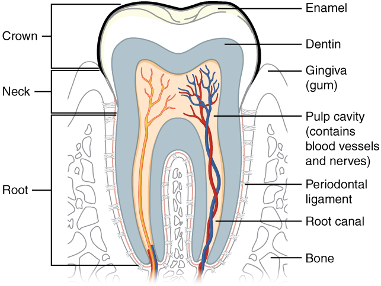

Forensic Odontology — Dental Age Assessment
Lecture module • Age assessment from teeth
1. Number of teeth
Each jaw carries a set of teeth arranged in four quadrants — upper right, upper left, lower left, lower right — counted from the midline outward.
Temporary (deciduous / milk) teeth
20
total — 10 in each jaw
- 4 incisors per jaw (2 central + 2 lateral)
- 2 canines per jaw
- 4 molars per jaw (first + second)
FDI quadrants: 5 (upper right), 6 (upper left), 7 (lower left), 8 (lower right).
Permanent teeth
32
total — 16 in each jaw
- 4 incisors per jaw
- 2 canines per jaw
- 4 premolars per jaw — only in permanent set
- 6 molars per jaw (first, second, third)
FDI quadrants: 1 (upper right), 2 (upper left), 3 (lower left), 4 (lower right).
Exam point: Permanent teeth are divided into two developmental sets —
Superadded (do not replace any deciduous tooth): all 6 molars per jaw.
Successional (replace deciduous teeth): incisors, canines, premolars — 10 per jaw.
2. Parts and morphology
Every tooth has three parts and is built from four tissue layers.

OpenStax AnatPhys fig.23.11 — Tooth, by OpenStax, via AnatomyTOOL.org, licensed under CC BY 4.0.
Three parts
- Crown — visible above the gum; covered by enamel
- Neck — constricted junction between crown and root; where the gum attaches
- Root — embedded in the jawbone; covered by cementum
Four tissues
- Enamel — hardest tissue in the body; covers the crown only; non-regenerative
- Dentin — main body of the tooth; lies beneath enamel and cementum; formed throughout life (secondary dentin deposits with age)
- Cementum — thin layer over the root; thickens with age (cementum apposition)
- Pulp — central cavity with nerves and vessels; shrinks as secondary dentin deposits
The periodontal membrane attaches the root to the alveolar bone.
Morphology by tooth type
INCISORS
Chisel-shaped crown. Convex labially, concave lingually (except near the neck). Single root. Function: cutting.
CANINES
Larger than incisors. Conical crown, very concave labially. Cutting edge tapers to a blunt point projecting beyond other teeth. Single, thick root. Function: tearing.
PREMOLARS
Smaller and shorter than canines. Nearly circular cross-section. Two cusps. Usually single root, may be double. Only in permanent set.
MOLARS
Largest, with broad cubical crown. Three to five cusps. Upper: 3 roots. Lower: 2 roots. Function: grinding.
3. Temporary vs permanent
Six traits distinguish the two sets. Every one of these is examinable.
| Trait | Primary | Permanent |
|---|
| Size | Smaller, lighter, narrower | Heavier, stronger, broader |
| Direction | Anterior teeth are vertical | Anterior teeth incline slightly forward |
| Crown colour | China-white | Ivory-white |
| Neck | More constricted | Less constricted |
| Root | Molar roots smaller, more divergent | Molar roots larger, less divergent |
| Ridge | Ridge at crown-fang junction present | No ridge |
The exam trap: "Size — smaller" is the rule, but there is one exception. Primary molars are longer than the permanent premolars that replace them. Everywhere else, primary is smaller.
Clinical clue: If unsure whether a tooth is primary or permanent, take an X-ray. The permanent tooth's germ will be visible underneath the primary root.
4. Gustafson's method — age estimation in adults
Below 14 years, age is read off the eruption chart. Above 21 years, the teeth are fully erupted and you must use the six physiological changes in dental tissues. Gustafson's method scores each one.
The acronym to remember them: APSRTC.
A
Attrition
Wear of the occlusal surface from mastication. Enamel first, then dentin, then pulp exposure in old age. Score 0–3.
P
Periodontosis
Regression of gums and periodontal tissues; roots exposed; teeth loosen. Estimated before extraction. Score 0–3.
S
Secondary dentin
Deposited on the walls of the pulp cavity with age. Starts at the pulp chamber, extends toward the apex; may fill the cavity completely. Score 0–3.
R
Root resorption
Sharp grooves on cementum and dentin. Starts at the apex, extends upwards. Usually late age. Score 0–3.
T
Transparency of the root (most reliable)
Dentin canals fill with mineral; dentine becomes translucent. Not seen before 30 years. Spreads from apex upward. Considered the single most reliable criterion. Score 0–3.
C
Cementum apposition
Cementum thickens with age, especially at the root end. Score 0–3.
Procedure
- Estimate periodontosis before extracting the tooth (it's lost once extracted).
- Extract the tooth. Anterior teeth are more suitable than posterior; third molars are unsuitable.
- Grind the tooth on glass slabs from both sides to ~1 mm — allows transparency to be scored.
- Further grind to ~0.25 mm for microscopic examination.
- Score each of the six parameters 0 to 3: 0 = no change; 1 = beginning; 2 = obvious; 3 = maximum.
- Add the scores, apply the regression formula, and read the estimated age.
Limitations:
- Error margin: ±4 to 7 years
- Limit of error increases above 50 years of age
- These changes are absent at 15 years — the method only applies to adults
- Johanson's modification of Gustafson's method is considered more accurate
Other methods:
Boyde's method — counts daily enamel incremental lines from the neonatal line onwards. Useful for infants.
Stack's method — uses weight and height of erupting teeth in children.
Continue
Once you've read these four sections, go back to the interactive timeline and use the age-estimation panel — you'll recognise why each boundary tooth sets the range.
Teaching modules for MBBS Forensic Medicine.
Content based on Reddy's Forensic Medicine, 36th ed.
3D models: University of Dundee School of Dentistry (CC BY 4.0).
Full attributions:
ATTRIBUTIONS.md